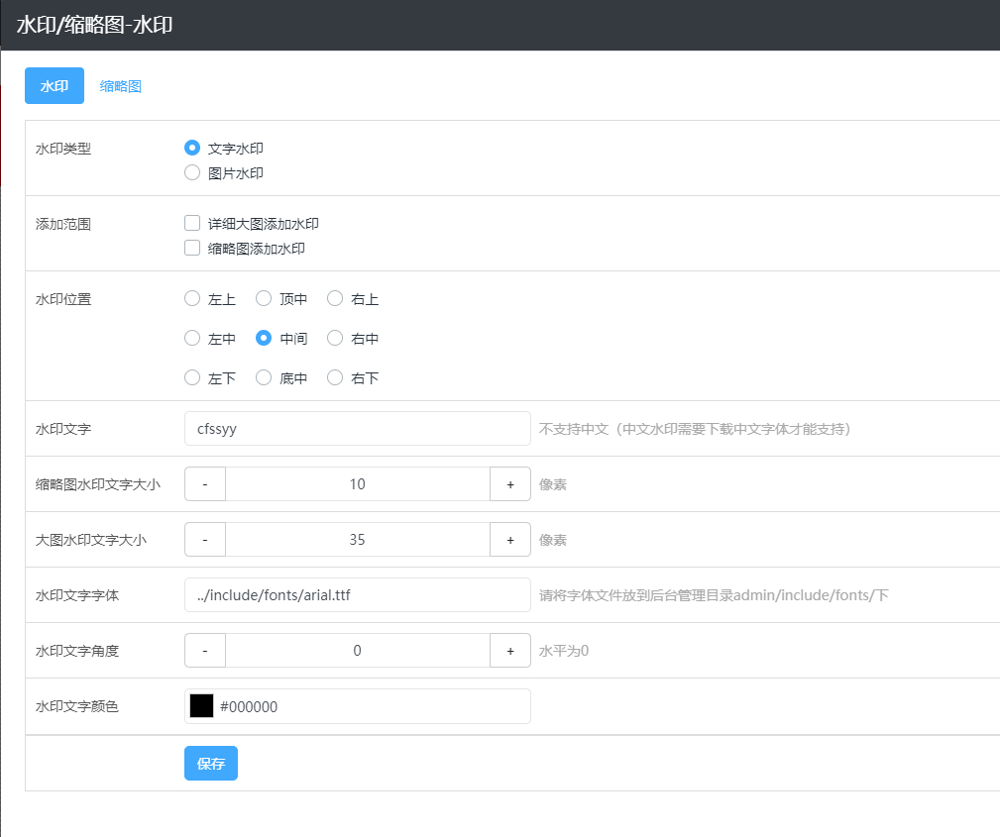
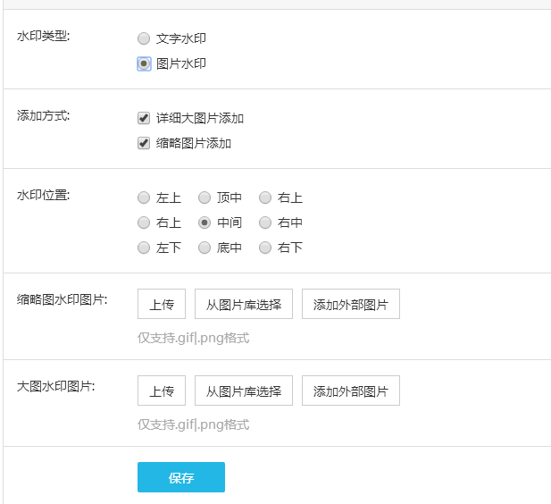

图片水印
可视化编辑后台 — 风格 — 图片水印中设置，可以添加文字或者图片两种类型水印；
1、文字水印设置

水印类型：选择文字水印类型。
添加方式：选择添加水印的对象，详细大图或者缩略图。
水印位置：设置水印在图片上显示的位置。
水印文字：设置展示的水印文字内容，一般为公司名称简称；如果需要去除添加的文字水印，则此处把添加的内容删除，为空保存设置，再重新生成缩略图即可。
文字大小：分别设置缩略图和大图上水印文字的大小。
水印文字字体：填写字体文件路径 「../include/fonts/字体文件名称」， 默认为英文字体，如果需要添加其他字体，需把字体文件上传到「后台管理目录/include/fonts」下；（不能直接在后台上传，）。
2、图片水印设置

水印类型：选择图片水印类型。
添加方式：选择添加水印的对象，详细大图或者缩略图。
水印位置：设置水印在图片上显示的位置。
上传水印图片：可以分别上传缩略图水印和大图水印图片，仅支持 .gif 和 .png 格式的图片，一般为公司 LOGO ；如果需要去除添加的图片水印，则此处把之前上传的水印图片删除，为空保存设置，再重新生成缩略图即可。
注意：水印设置好之后，只需点击可视化编辑中 — 常用功能 — 清空缓存，然后再重新访问页面即可重新生成带水印的缩略图。
3、如何去除水印
网站添加了水印后，想要去除怎么办？
文字水印：其他设置跟添加水印时保持一致，只需把填写的水印文字删除，为空保存设置，重新生成缩略图即可。
图片水印：其他设置跟添加水印时保持一致，只需把上传的水印图片删除，为空保存设置，重新生成缩略图即可。
注意：此去除水印的方法，只针对通过此方法生成的缩略图有效。